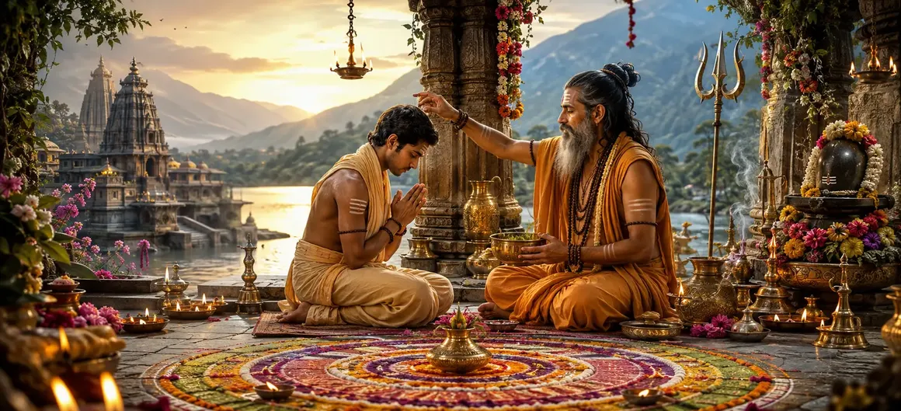

शिष्य का अभिषेक
वायवीय संहिता का इक्यावनवाँ अध्याय पवित्र अनुष्ठानों, शुद्धिकरण संस्कारों और आध्यात्मिक गुरु द्वारा शिष्य के औपचारिक अभिषेक की रूपरेखा देता है।
ऋषि वायु बताते हैं कि कैसे दीक्षा (दीक्षा) साधक को बदल देती है, पिछले कर्मों को साफ करती है और भगवान शिव की दिव्य रोशनी के लिए आंतरिक आंख खोलती है।
यह अध्याय शैव परंपरा के भीतर औपचारिक अभ्यास के प्रवेश द्वार के रूप में कार्य करता है।
अध्याय 51 की मुख्य बातें
पवित्र दीक्षा
साधक को शामिल करने का औपचारिक संस्कार।
शुद्धिकरण संस्कार
आध्यात्मिक पुनर्जन्म के लिए शरीर और मन की सफाई।
अनुष्ठान प्रसाद
अभिषेक के दौरान पवित्र आहुतियाँ और पूजा।
जागृति दृष्टि
शिव के प्रति आंतरिक धारणा को खोलना।
पारंपरिक संस्कार
वायु ऋषि द्वारा दिये गये विस्तृत आदेश।
आगे का रास्ता
अध्याय 52 में दीक्षा के शासकीय नियमों की तैयारी।
इस अध्याय में मुख्य विषय
शिष्य की पात्रता एवं तत्परता
ऋषि वायु बताते हैं कि अभिषेक से पहले, शिष्य को सच्ची भक्ति, विनम्रता और अयोग्य इच्छाओं से वैराग्य प्रदर्शित करना चाहिए।
गुरु साधक के हृदय की जांच करते हैं ताकि यह सुनिश्चित हो सके कि वे दीक्षा की पवित्र रोशनी प्राप्त करने के लिए पूरी तरह से तैयार हैं।
प्रारंभिक शुद्धिकरण और स्नान अनुष्ठान
दीक्षा अनुष्ठान औपचारिक स्नान और शुद्धिकरण संस्कार के साथ शुरू होता है, बाहरी अशुद्धियों को धोना और आंतरिक स्वच्छता का प्रतीक है।
दीक्षार्थी स्वच्छ वस्त्र पहनता है और पवित्र परिवर्तन के लिए मानसिक रूप से तैयार होता है।
पवित्र अग्नि समारोह (होम)
एक पवित्र अग्नि को पवित्र किया जाता है, और भगवान शिव और ग्रह देवताओं की उपस्थिति का आह्वान करने के लिए मंत्रों के साथ आहुति दी जाती है।
अग्नि दिव्य साक्षी और कर्म बाधाओं के परिवर्तक के रूप में कार्य करती है।
गुरु द्वारा पवित्र मन्त्र प्रदान करना
अभिषेक समारोह के केंद्र में, गुरु सीधे शिष्य के कान में पवित्र मंत्र फुसफुसाते हैं, जिससे आध्यात्मिक चेतना जागृत होती है।
यह अंतरंग प्रसारण आध्यात्मिक बंधन की सच्ची शुरुआत का प्रतीक है।
दीक्षा का आध्यात्मिक पुनर्जन्म
अभिषेक के माध्यम से, शिष्य एक प्रतीकात्मक आध्यात्मिक पुनर्जन्म से गुजरता है, पुरानी सीमाओं को त्यागता है और भगवान शिव के दिव्य परिवार में प्रवेश करता है।
गुरु आध्यात्मिक पिता बन जाता है जो उनके चल रहे विकास का मार्गदर्शन करता है।
दीक्षा के बाद प्रारंभिक कर्तव्य और पालन
दीक्षा के बाद, शिष्य को दैनिक पूजा, स्वच्छता, सच्चाई और गुरु और देवताओं के प्रति श्रद्धा का निर्देश दिया जाता है।
इन कर्तव्यों का दृढ़ पालन आध्यात्मिक लाभ को स्थिर करता है।
अध्याय 52 की ओर (शैव दीक्षा को नियंत्रित करने वाले नियम)
अध्याय 51 में शिष्य के अभिषेक का विवरण देने के बाद, ऋषि वायु अध्याय 52, 'शैव दीक्षा को नियंत्रित करने वाले नियम' बताने की तैयारी करते हैं।
यह अगला अध्याय आरंभिक अभ्यासकर्ताओं के लिए आवश्यक विशिष्ट कानूनों, प्रोटोकॉल और आचरण के बारे में विस्तार से बताएगा।
अध्याय 51 की मुख्य शिक्षाएँ
दीक्षा अनुष्ठान
गुरु द्वारा आयोजित औपचारिक संस्कार.
आंतरिक सफ़ाई
पिछले कर्मों और अशुद्धियों को धोना।
पवित्र अग्नि
होम आहुति के माध्यम से आह्वान.
मंत्र फुसफुसाहट
शिष्य के कान में गुप्त संचार.
आध्यात्मिक पुनर्जन्म
भगवान शिव के दिव्य परिवार में प्रवेश।
नियम प्रस्तावना
अध्याय 52 में दीक्षा नियम स्थापित करना।
आध्यात्मिक चिंतन
दीक्षा केवल एक समारोह नहीं है, बल्कि एक प्रबुद्ध गुरु के दयालु मार्गदर्शन के तहत आत्मा की दिव्य क्षमता का पवित्र जागरण है।
अध्याय 51 का संदेश जीना
आध्यात्मिक प्रथाओं में आवश्यक अनुशासन और पवित्रता को महत्व दें, प्रत्येक अनुष्ठान को ईमानदारी और फोकस के साथ करें।
अपने शिक्षकों और उन पवित्र परंपराओं के प्रति श्रद्धा बनाए रखें जो आपके आंतरिक विकास का मार्गदर्शन करती हैं।
प्रतिदिन ध्यानपूर्वक ध्यान और भक्ति के माध्यम से अपनी आध्यात्मिक प्रतिज्ञाओं के प्रति अपनी प्रतिबद्धता को नवीनीकृत करें।
प्रमुख आध्यात्मिक अवधारणाएँ
आध्यात्मिक दीक्षा के नियम एवं प्रक्रियाएँ।
शिष्य की शुद्धि.
पवित्र अग्नि अनुष्ठान प्रसाद.
पवित्र मंत्र का निर्देश और प्रदान करना।
दिव्य चेतना में आध्यात्मिक पुनर्जन्म।
गुरु-शिष्य का पवित्र रिश्ता.
अध्याय सारांश
वायवीय संहिता अध्याय 51 में शिष्य के अभिषेक का विवरण दिया गया है, जिसमें गुरु द्वारा किए गए पवित्र दीक्षा संस्कार, शुद्धिकरण स्नान, अग्नि समारोह और मंत्र प्रदान करने की रूपरेखा दी गई है। यह अध्याय साधक के आध्यात्मिक अभ्यास में औपचारिक प्रवेश का प्रतीक है और अध्याय 52, 'शैव दीक्षा को नियंत्रित करने वाले नियम' के लिए मंच तैयार करता है।
अक्सर पूछे जाने वाले प्रश्न
1. वायवीय संहिता अध्याय 51 का मुख्य विषय क्या है?
अध्याय 51 पवित्र दीक्षा संस्कार, शुद्धिकरण प्रक्रियाओं और आध्यात्मिक गुरु द्वारा शिष्य के औपचारिक अभिषेक पर केंद्रित है।
2. किसी साधक के लिए अभिषेक का क्या महत्व है?
अभिषेक (दीक्षा) शिष्य के मन और शरीर को शुद्ध करता है, पिछले कर्मों की अशुद्धियों को दूर करता है, और औपचारिक रूप से उन्हें भगवान शिव के पवित्र मार्ग में शामिल करता है।
3. इस अध्याय में अभिषेक की विधि का वर्णन कौन करता है?
ऋषि वायु ने श्रोता ऋषियों को दीक्षा और अभिषेक की पवित्र प्रक्रियाओं का विवरण दिया।
4. अध्याय 51 के बाद नेविगेशन के लिए अगला अध्याय कौन सा है?
नेविगेशन के लिए अगले अध्याय का शीर्षक 'शैव दीक्षा को नियंत्रित करने वाले नियम' है।
"पवित्र अभिषेक और गुरु की कृपा के माध्यम से, शिष्य दिव्य ज्ञान में पुनर्जन्म लेता है, भगवान शिव के उज्ज्वल मार्ग पर चलने के लिए सभी नश्वर छायाओं को त्याग देता है।"
वायवीय संहिता के माध्यम से जारी रखें
अध्याय 51 शिष्य के अभिषेक का समापन करता है। शैव दीक्षा को नियंत्रित करने वाले नियमों को जारी रखें।